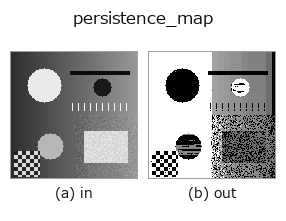

morphology op• 데이터 종류: image → image
• 호출: fullseye.apply(img, "persistence_map", a=0.5, b=0.5)(2-D 는 이미지 1 장 + 스칼라 노브 2 개 a,b∈[0,1] 모델)

*그림은 128×128 합성 입력에서 실제로 실행한 출력. 왼쪽이 입력, 오른쪽이 출력. 점군은 위에서 본 산점도(밝기 = z), 1-D 열은 꺾은선, 볼륨은 z 방향 최대값 투영, 동영상은 가운데 프레임, 복소 영상은 진폭이며, 그림이 되지 않는 반환값은 값 자체를 표시한다.*
노브 a 를 훑기(0.1 / 0.5 / 0.9, 다른 노브는 기본값):
▸ persistence_map: knob a sweep (docs site)
노브 b 를 훑기(0.1 / 0.5 / 0.9, 다른 노브는 기본값):
▸ persistence_map: knob b sweep (docs site)
다른 영상에서도(합성 장면 / 사진 / 동전. 윗줄이 입력, 아랫줄이 그 출력. 노브는 기본값):
▸ persistence_map: other inputs (docs site)
*4열은 컬러 (H,W,3) 입력. 이 op는 채널을 넘나들지 않고 컬러를 다룰 수 있다(색 채널을 세 번째 공간축으로 컨볼루션하지 않음).*
> 이 연산자의 설명은 아직 번역이 없습니다. 원문을 그대로 싣습니다.
閾値を選ばずに「山の目立ち具合」を測る(0 次元パーシステンス)。
閾値を 1 つ選ぶと適用範囲が狭まる —— という矛盾は「**全部の閾値を試して、結果が
変わらない所だけ残す**」ことで解ける。高い方から水位を下げていき、新しい山が現れた
高さ(誕生)と、その山がより高い山に飲まれた高さ(消滅)の差を、その山の
persistence(目立ち具合) とする。地形でいう「突出度(prominence)」そのもの。
出力は各画素に「その画素が属する山の persistence」を入れた地図。`a` は残す下限
(これ未満の山は 0 にする)、`b` は連結の仕方(0.5 未満で 4 近傍、以上で 8 近傍)。
**`h_maxima / MSER との違い**: xsk2_h_maxima は h` をひとつ選んで
「それ以上の山」を返す —— つまり閾値を 1 つ選んでいる。こちらは**全部の h に
ついての答えを 1 枚に畳んだもの**なので、後から好きな水準で切れる。MSER は
「面積が安定な領域」を探すので似た発想だが、あちらは領域の形、こちらは高さ。
適用条件: (1) 画像全体で一番高い山は消滅しないので、`最大値 - 最小値` を
persistence とする(慣例)。そのため背景は全体最大の値(1.0)を持つ ——
背景は一番最後に処理され、そのときには成分がすべて併合されているので、位相的には
確かに全体成分に属する。山の高さを読む地図であって、背景を 0 にする地図ではない。
背景を落としたいなら閾値 op と掛けるか、`a で下限を上げること(a=0.45` で
高さ 0.3 の山だけが消え、1.0 と 0.6 は残ることを実測した)。(2) 平坦な台地(同じ値が続く)は 1 つの山として
扱われる。(3) 計算は画素を降順に走査する union-find なので、大きな画像では
`h_maxima` より遅い。
• gallery2d_morphology 패밀리 가이드
• 샘플 데이터 카탈로그(DL URL / 라이선스) —— 2-D 는 skimage.data(BSD/public)+ 합성, 3-D 는 실데이터 소스(Stanford/PDS 등)의 DL URL.
• 연산자의 내력·참고문헌 —— 이 연산자 족의 바탕이 된 연구/기법의 출처.
• 알고리즘의 정전(저자·연도)과 용도는 위의 패밀리 사용 가이드에 적혀 있습니다.
아래 프로그램은 실제로 실행됨을 확인했습니다(그림과 같은 입력). Studio 도움말에서는 이 블록이 버튼이 되어 즉시 불러와 실행할 수 있습니다.
persistence_map 0.35 0.50
▸ Load this pipeline · Load & run
• gallery2d_morphology — py -3.11 examples/gallery2d_morphology.py
image 를 입력으로 받는 것)identity · gaussian · mean_box · bilateral · unsharp · median · min_filter · max_filter
morphology)gerode · gdilate · gopen · gclose · tophat · bothat · morph_grad · local_thickness
*Provenance: ops.py — 2D 연산자 레지스트리. 이 op 노트는 tools/opdocs.py md 가 자동 생성합니다(직접 편집하지 마세요).*
© 2026 Kazufumi Furuse — Fullseye operator documentation. Licensed under Apache-2.0.
{kind=link}
{kind=link}
{kind=link}